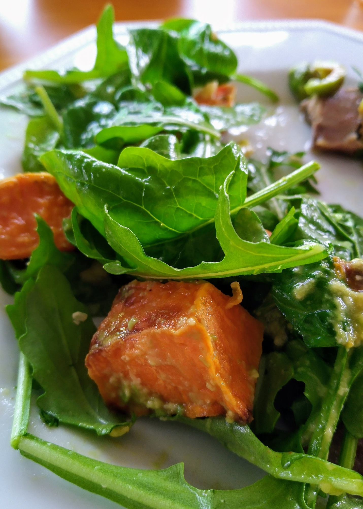

Sweet Potato Salad

Preheat oven to 180 degrees
1 largesweet potato
Cut sweet potato into 2 cubes
Season with salt and pepper
Roast for 30 mins or until soft
1 bagspinach and rockets leavessomepine nutes
Add spinach and rockets leaves and pine nutes to mix
somebalsamic vinegarsomehoney
Combine balsamic vinegar and honey and drizzle over salad
somefeta cheesesomeavocado
Serve with crumbled feta cheese and avocado